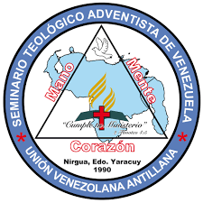

Estudiante de Teología • Liderazgo Juvenil • Comunicación Ministerial
Un proceso de formación orientado al servicio cristiano, el liderazgo espiritual y el desarrollo integral dentro del ministerio. Integrando preparación teológica, crecimiento personal y experiencia práctica en distintas áreas de servicio, con el propósito de desarrollar una vocación centrada en la enseñanza bíblica, el acompañamiento pastoral y el fortalecimiento espiritual de las personas. Una formación que busca unir conocimiento, carácter y compromiso, entendiendo el ministerio no solo como una responsabilidad, sino como un llamado al servicio, la influencia positiva y el crecimiento continuo.
Conocer MásNacido en Barquisimeto, Venezuela, crecí en un entorno pastoral que influyó profundamente en mi comprensión del servicio cristiano, el liderazgo y la formación espiritual.
Actualmente mi formación integra preparación teológica, liderazgo juvenil, herramientas tecnológicas y crecimiento espiritual, buscando desarrollar un ministerio caracterizado por la enseñanza bíblica, el servicio y la cercanía humana.
Considero que la realidad y la vida solo pueden comprenderse plenamente a través de Dios, quien es el Creador y sustento de todas las cosas. Creo que la Biblia es una guía fundamental para entender el propósito humano y orientar las decisiones. También entiendo que el ser humano posee valor por haber sido creado a imagen de Dios, aunque el pecado ha afectado su naturaleza. Por ello, considero que la vida debe orientarse por principios como la verdad, la integridad, el servicio y la fidelidad a Dios, influyendo tanto en mi fe como en mi vocación ministerial.
Servir a Dios y a las personas mediante la enseñanza de las Escrituras, el acompañamiento espiritual y el fortalecimiento de la iglesia.
Desarrollar un ministerio caracterizado por una enseñanza bíblica sólida, cercanía humana y compromiso con la proclamación del evangelio.

Formación teológica y ministerial orientada al liderazgo, la enseñanza bíblica y el servicio pastoral.
Falta de constancia en hábitos espirituales y organización del tiempo, junto con cierta inseguridad al expresar ideas o tomar decisiones en contextos exigentes. Ambos aspectos afectan el rendimiento y requieren mayor disciplina y desarrollo personal.
El entorno formativo ofrece acceso a preparación teológica, acompañamiento espiritual y experiencias prácticas que fortalecen el desarrollo académico y ministerial, permitiendo aplicar lo aprendido y crecer de manera integral.
Se destaca una base espiritual constante, disposición al aprendizaje, capacidad de análisis y un sentido de responsabilidad en crecimiento, lo cual favorece el desarrollo académico y ministerial progresivo.
El riesgo de caer en la rutina, la falta de enfoque, el cansancio y el conformismo pueden afectar el crecimiento si no se mantienen hábitos de disciplina y una búsqueda constante de superación personal y ministerial.
Antes de estar expuesto a este proceso de formación, mi condición personal y profesional era más limitada en cuanto a comprensión y aplicación de los conocimientos. Había bases, pero muchas cosas se manejaban de forma superficial o sin mucha profundidad, como que uno sabía, pero no terminaba de conectar todo. Con el avance en este proceso, he notado cambios en la manera de pensar, analizar y enfrentar diferentes situaciones, aunque todavía no es un proceso terminado y hay bastante por mejorar. Uno de los aspectos que más ha contribuido a este crecimiento ha sido el desarrollo de ciertas disciplinas personales, como el estudio constante, la reflexión y, en algunos momentos, la organización del tiempo. No siempre se ha logrado mantener una constancia ideal, pero sí ha habido un avance en comparación a como era antes. Estas disciplinas han ayudado a entender que el crecimiento no es automático, sino que requiere intención, esfuerzo y también cierta paciencia. A pesar de los avances, hay aspectos que todavía necesitan mejorar, especialmente en la constancia, la disciplina y la seguridad al momento de tomar decisiones. A veces se sabe lo que se debe hacer, pero no siempre se ejecuta de la mejor manera, y eso es algo que poco a poco se está trabajando. Reconocer estas áreas no es algo negativo, sino parte del proceso de crecimiento, aunque no siempre sea cómodo verlo. En cuanto al impacto de este desarrollo, considero que ha comenzado a influir en la manera de tomar decisiones, ya que ahora hay más conciencia de las consecuencias y del propósito detrás de cada acción. Esto también tiene una relación directa con el liderazgo, porque no se trata solo de dirigir, sino de hacerlo con criterio y coherencia, entonces lo aprendido hasta ahora puede servir como base para guiar a otros, aunque todavía se esté en proceso de formación. Finalmente, a partir de este análisis, surge el compromiso de seguir creciendo de manera intencional, no solo en lo académico, sino también en lo personal y espiritual. Esto implica trabajar en la constancia, aprovechar mejor las oportunidades y no conformarse con lo básico. Aunque el proceso no es perfecto, sí hay una dirección más clara, y eso ya representa un avance importante.